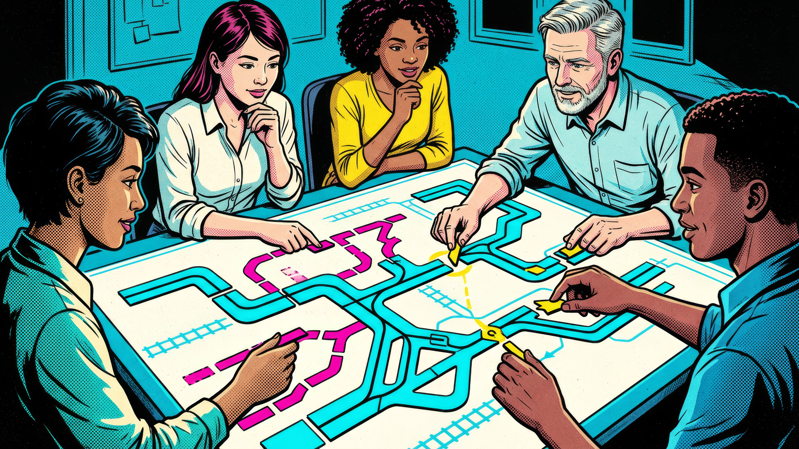
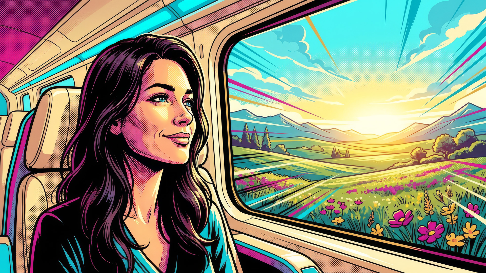

One customer journey. Teams working from different understandings.
Established shared direction across teams for sales journeys that support customers exploring coverage, preparing to buy, or seeking agent guidance.
At a Glance
- Digital insurance sales
- 7-person experience team
- Customer journey strategy
- Cross-functional leadership
Project Overview
- Client: American Family Insurance
- Timeline: Aug 2022 – Jul 2025
- Organizational context: Digital Sales Platform within a broader 35-person design organization, partnering with product, CX, research, and engineering.
Leadership & Influence
- Set experience direction for the Digital Sales Platform, connecting customer research to journey priorities, guidance, and digital-to-agent transitions.
- Owned experience architecture for a centralized account, identity, and permissions initiative spanning 21 brands, reconciling fragmented journeys and requirements into a coherent cross-product model that was incorporated into the broader product.
- Shaped with partners customer journey priorities, guidance, and digital-to-agent transitions.
- Established collaborative practices for exploring ideas and negotiating priorities, and architected a shared design-system strategy to unify experience standards across brands, web, and mobile.
Challenge
American Family’s quote flows were inconsistent. But standardizing them would not solve the deeper problem: customers arrived with different intentions, while teams owned separate pieces of their experience.
- Different customers needed different paths. Some were comparing options; others were ready to buy. They needed help understanding coverage, cost, and when to involve an agent.
- Customers crossed boundaries that teams worked within. Separate ownership made it harder to connect the journey around what customers needed next.
- Teams needed a shared basis for decisions. Existing research offered valuable insight, but teams still had to translate it into priorities and negotiate competing needs.
The challenge was to give teams shared direction without forcing every customer through the same experience.
Objectives
- Shape journeys around customer intent. Support people exploring coverage, comparing value, preparing to buy, or seeking agent help.
- Organize teams around the whole journey. Connect priorities across separately owned touchpoints so customers experience continuity.
- Establish collaborative innovation practices. Bring teams together to explore possibilities, negotiate tradeoffs, and improve the journey across organizational boundaries.
The business aim was to help customers take a relevant next step, whether exploring coverage, comparing value and cost, preparing to buy, or seeking agent support. Consistency mattered, but it could not replace customer relevance.
Understand different customer intentions. A consistent journey still needs to serve different reasons for being there.

Bring teams around the whole journey. Use shared evidence and different perspectives to shape priorities together.

Make shared direction serve the customer. Keep relevant choices, guidance, and agent support at the center of team decisions.
Approach
- Understand customers and test assumptions. Combined existing research with new research to test our hypotheses about customer intentions, coverage and cost questions, and agent relationships. AI-assisted synthesis helped turn findings into evidence for experience priorities.
- Bring teams together to make better decisions. Established collaborative workshops where teams explored ideas, challenged assumptions, prioritized improvements, and negotiated compromises. Customer evidence and different perspectives shaped both product direction and shared design-system governance.
- Make collaboration a repeatable practice. Used a UX maturity assessment to identify gaps and establish recurring reviews and work-sharing. Conversational “North Star” prototypes helped teams explore future customer guidance; they informed strategy rather than representing shipped AI capabilities.
Outcomes
American Family ranked highest in the shopping segment of the 2023 J.D. Power U.S. Insurance Digital Experience Study. This was a recognizable milestone during my tenure, as we continued improving the sales experience through customer research, journey improvements, and cross-functional collaboration.
- Customer understanding shaped experience priorities. Working with product, CX, research, and engineering partners, I translated customer intentions into journey priorities, guidance, and agent-support concepts.
- Collaboration became an ongoing practice. I helped establish recurring workshops and work-sharing at multiple organizational levels, giving teams regular opportunities to examine ideas, negotiate tradeoffs, and connect decisions across the journey.
- The practice spread beyond my facilitation. I observed other teams adopting the approach in their own work, extending its use beyond the larger sessions I facilitated.
Source: 2023 J.D. Power U.S. Insurance Digital Experience Study, shopping segment. An organizational achievement during my tenure; my contribution focused on DSP experience leadership and cross-functional collaboration.